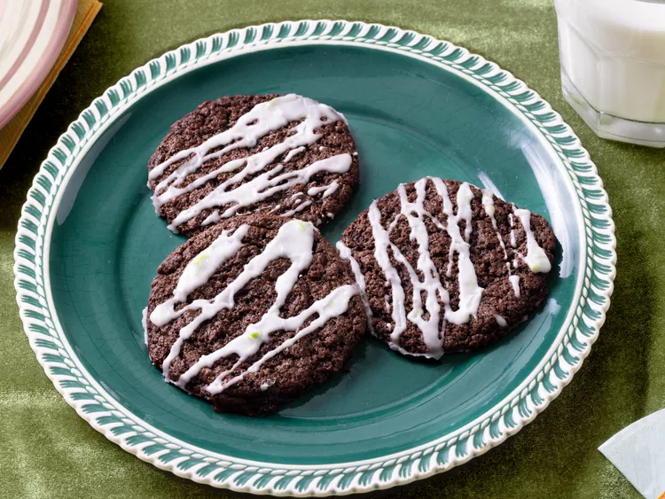

Home
Dirty Soda Cookies

Description:
These dirty soda cookies combine devil's food cake mix with Dr. Pepper
for the easiest cookie dough ever, then a 3-ingredient glaze is drizzled over the top.
Ingredients:
- 1 (15 ounce) box devil's food cake mix
- 6 fluid ounces Dr. Pepper soda or cola
- Cooking Spray
- 2 cups confectioner's sugar
- 1 tablespoon coconut milk or coconut coffee creamer
- 1/8 teaspoon lime zest
- 1/8 teaspoon kosher salt
Steps:
- Gather all ingredients. Preheat the oven to 350 degrees F (175 degrees C). Line a baking sheet with parchment paper.
- Stir cake mix and soda together in a bowl until a dough forms (dough will be sticky). Coat hands lightly with cooking spray and roll tablespoon-sized balls of dough. Place dough balls on the prepared baking sheet and press lightly to slightly flatten the tops.
- Bake in the preheated oven until cookies are just baked around the edges and still soft in the center, 8 to 9 minutes. Let cool for a few minutes on the baking sheet, then transfer to a wire rack set over parchment paper or set inside a baking sheet.
- Whisk confectioner's sugar, coconut milk, lime zest, and salt together in a bowl until smooth. Drizzle icing over cookies and let stand until icing firms up slightly.